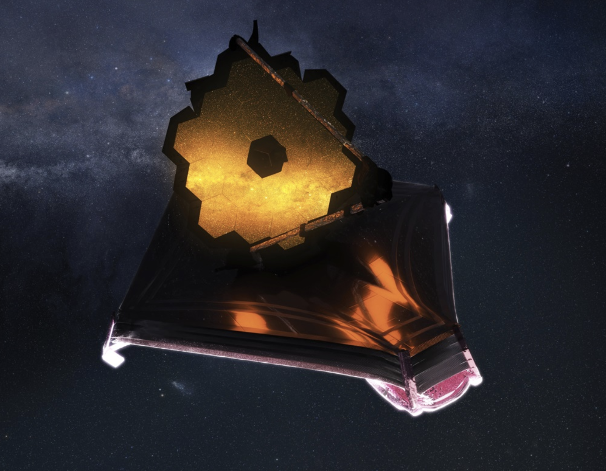

PRIMER: Public Release IMaging for Extragalactic Research
 PRIMER (Public Release IMaging for Extragalactic Research) is a major public Treasury Program designed to provide the astronomical community with an early, large-area, homogenous, deep JWST NIRCam+MIRI imaging survey of enormous power and legacy value. Exploiting to the full the unique near-mid IR imaging capablities of JWST, PRIMER will have an immediate scientific impact, revolutionizing our knowledge of early galaxy and black-hole formation/evolution out to the highest redshifts yet probed. Moreover, executed early in the JWST mission, PRIMER can be a key driver for maximising the exploitation of JWST in subsequent cycles, as it will yield a wealth of new high-redshift targets for follow-up spectroscopy with JWST NIRSpec. In addition, because PRIMER images the two key equatorial HST CANDELS Legacy Fields (COSMOS and UDS), new high-z targets will also be accessible with ALMA for follow-up at (sub)mm wavelengths, maximising the long-term impact of this major Cycle-1 program.
PRIMER (Public Release IMaging for Extragalactic Research) is a major public Treasury Program designed to provide the astronomical community with an early, large-area, homogenous, deep JWST NIRCam+MIRI imaging survey of enormous power and legacy value. Exploiting to the full the unique near-mid IR imaging capablities of JWST, PRIMER will have an immediate scientific impact, revolutionizing our knowledge of early galaxy and black-hole formation/evolution out to the highest redshifts yet probed. Moreover, executed early in the JWST mission, PRIMER can be a key driver for maximising the exploitation of JWST in subsequent cycles, as it will yield a wealth of new high-redshift targets for follow-up spectroscopy with JWST NIRSpec. In addition, because PRIMER images the two key equatorial HST CANDELS Legacy Fields (COSMOS and UDS), new high-z targets will also be accessible with ALMA for follow-up at (sub)mm wavelengths, maximising the long-term impact of this major Cycle-1 program.
By delivering fully-sampled 10-band NIRCam+MIRI imaging across a wide area, PRIMER enables a wealth of extragalactic science that cannot be addressed by the approved GTO or ERS programs. Indeed, PRIMER increases by a factor of ~20 the area of comparable-quality deep JWST imaging available to the community in Cycle 1.
To ensure the success of PRIMER we have assembled a large, expert, multi-national team. We will release all data with zero proprietary time, along with a wealth of higher-level data products.
Read more about the Observations, the Science, the Team and the Data releases.
